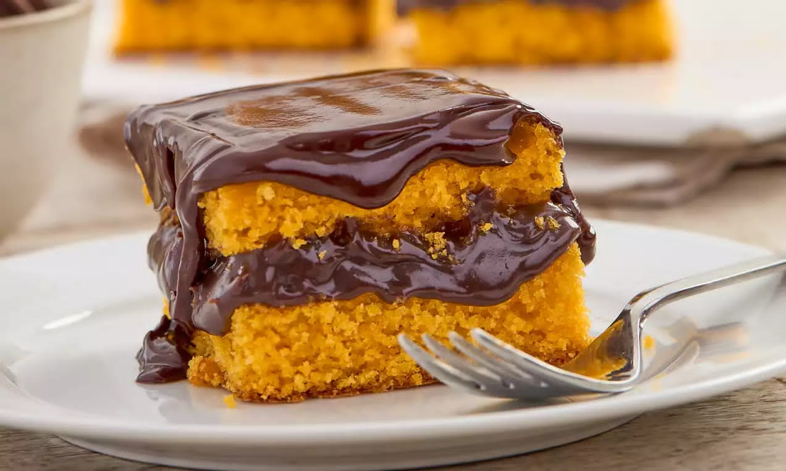

Bolo de Cenoura com Cobertura de Chocolate
Rendimento: 10 porções • Preparo: 45 minutos • Dificuldade: Fácil
Ingredientes
- 3 cenouras médias
- 3 ovos
- 1 xícara de óleo
- 2 xícaras de açúcar
- 2 1/2 xícaras de farinha de trigo
- 1 colher (sopa) de fermento
Modo de Preparo
- No liquidificador, bata as cenouras descascadas, ovos, óleo e açúcar até formar creme.
- Misture a farinha aos poucos e adicione o fermento por último.
- Coloque em forma untada e leve ao forno (180°C) por 40–45 minutos.
- Para cobertura, misture chocolate em pó, manteiga e leite e leve ao fogo até engrossar.